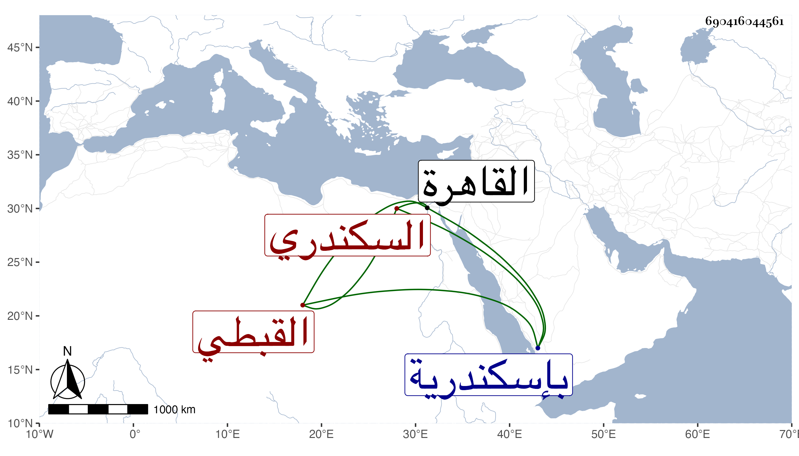

0902Sakhawi.DawLamic.ITO20230111-ara1.EIS1600.690416044561
Biography ID: 690416044561
811
ماجد بن عبد الرزاق فخر الدين القبطي السكندري وسمى نفسه محمدا أخو سعد الدين إبراهيم الماضي والفخر أكبر وكان جدهما نصرانيا كما سلف ويعرف بابن غراب . ولد بإسكندرية ونشأ بها فباشر في ديوانها ثم ولي نظرها حين عمل أخوه ناظر الخاص إلى أن استدعاه أخوه بعد موت الظاهر برقوق إلى القاهرة فقدمها في سنة إحدى وثمانمائة واستقر في الوزارة في ذي الحجة منها عوضا عن الشهاب أحمد بن عمر بن قطينة وكذا ولي نظر الخاص مضافا للوزر ولم يحمد فيهما وعزل وسلم بعد أخيه إلى الجمال البيري الاستادار فعاقبه أشد عقوبة وسجنه عنده إلى نصف ذي القعدة سنة إحدى عشرة ثم سلمه إلى الوالي وحرضه عليه حتى مات تحت العقوبة في ليلة العاشر من ذي الحجة منها ، وكان سيء السيرة في مباشرته ظالما عسوفا جاهلا ألكن مع حدة وقبح شكالة وضخامة ولذا قال شيخنا في إنبائه ولم يكن فيه من آلات الرياسة شيء بل كان يلثغ لثغة قبيحة يجعل الجيم زايا والشين المعجمة مهملة ويسير سيرة جائرة ، ولما مات أخوه خمل وخمد وآل أمره إلى أن قتل في حبس جمال الدين غيلة ، وذكره ابن خطيب الناصرية أيضا والمقريزي في عقوده ولكنه قال إنه مات في أول ليلة ذي الحجة .
